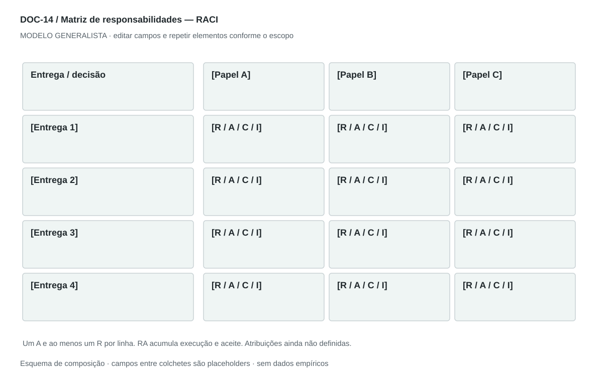

DOC-14 / Biblioteca documental generalista
Matriz de responsabilidades — RACI
Esclarecer quem executa, decide, é consultado e informado sobre cada entrega ou decisão.
Modelo de investigação. Não representa uma análise concluída. Campos vazios devem permanecer identificados; não inventar dados para completar figuras.
Estrutura editorial
Matriz paisagem de uma página, repetindo cabeçalho se necessário; dicionário de papéis e regras em página complementar.
Visual previsto

Entregas em linhas e papéis em colunas; letras grandes, legenda textual e contraste. Marcar ausência de A ou R como pendência, sem atribuição automática.
Imagens: Tabela é o visual principal; nenhum retrato ou ícone de cargo é necessário.
Dicionário de dados
| Campo | Tipo | Dado necessário |
|---|
| atividade_id | referencia | Entrega ou decisão rastreada ao WBS |
| papel_id | referencia | Papel efetivamente disponível |
| atribuicao | enum | R, A, C, I, RA ou sem_participacao |
| autoridade | texto | O que o papel pode decidir |
| substituto | referencia | Papel acionado em ausência |
| escalonamento | texto | Como resolver impasse ou falta de capacidade |
Todos os registros precisam de classificação, fonte, localização, datas, confiança e limitação. Números também precisam de unidade, moeda quando aplicável e período.
Modelo preenchível
Os quadros amarelos podem ser editados nesta página para impressão. Edições não são gravadas automaticamente: use o Markdown/JSON para manter uma versão ou imprima em PDF após editar.
[Negócio] · [Versão] · [Data-base] · [Autor] · [Audiência] · [Território]
Pergunta decisória: [A preencher]
Escopo: [A preencher]
1. Escopo e papéis
Liste papéis reais disponíveis; pessoas podem acumular funções.
[Análise + evidência + implicação + lacuna]
2. Matriz
Linhas de entregas ou decisões, colunas de papéis e atribuições R/A/C/I.
[Análise + evidência + implicação + lacuna]
3. Legenda
R executa; A responde pelo aceite; C contribui antes da decisão; I recebe informação.
[Análise + evidência + implicação + lacuna]
4. Escalonamento
Defina substituto, conflito de autoridade, prazo de decisão e revisão.
[Análise + evidência + implicação + lacuna]
5. Dicionário dos papéis
Descreva autoridade e limite sem depender de siglas de cargos.
[Análise + evidência + implicação + lacuna]
Decisão e próximo passo
[Decisão e justificativa]
[Alternativa considerada]
[Condição de reversão]
[Ação, responsável, prazo e critério]
Fontes e limites
[Fonte + localização + datas + o que sustenta + limitações]
Critérios de revisão
- Exatamente um A por linha, contando RA como A.
- Ao menos um R por linha, contando RA como R.
- A pessoa ou papel atribuído existe e dispõe de capacidade.
Estudo do arquivo original
DOC-14-fonte.pdf — Duas páginas retrato. Matriz rasterizada na primeira, legenda R/A/C/I abaixo, descrições de cargos na segunda. O quadro usa executivos e times como colunas, com células R, A e combinações. O detalhamento de cargos ajuda a leitura, mas não deve impor uma estrutura de grande empresa.
Observação do original e adaptação recomendada são camadas distintas. Nomes, preços, localidades, contatos e conclusões do caso-fonte não devem preencher a nova análise.